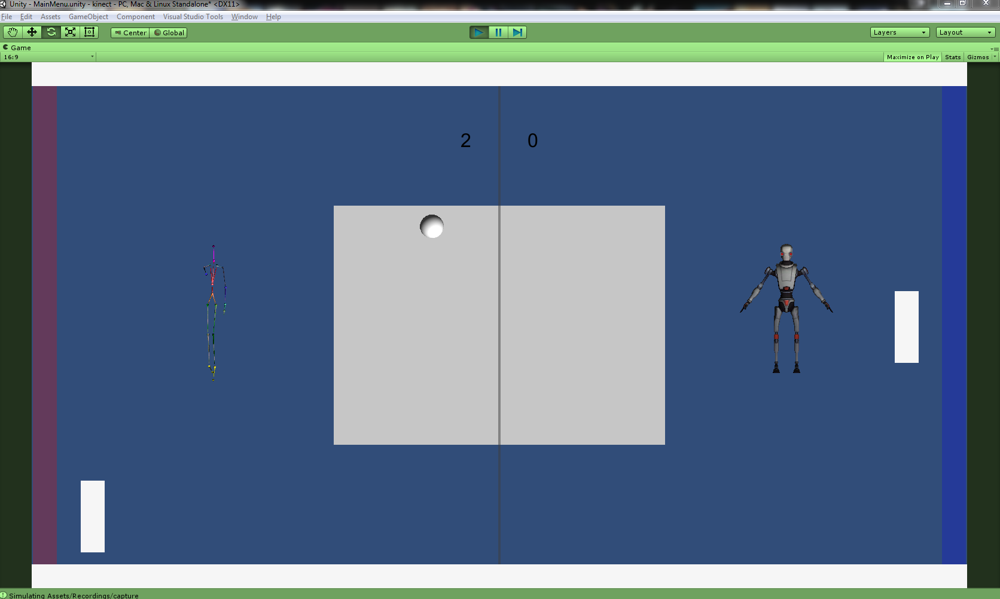

Philippe a téléchargé des modèles 3D dans le magasin de Unity et cherché une façon de pouvoir contrôler les modèles. Ce fut assez, puisqu'il ne faut que relier les parties du modèle avec les variables de la Kinect qui correspondent à la bonne partie du corps. Nous avons maintenant un personnage qui nous représente dans le jeu.
Ensuite Philippe a fait un menu pour choisir le modèle qui sera dans le jeu pour chaque joueur. Ce menu utilisera le swipe de Pierre-Olivier pour changer de modèle.